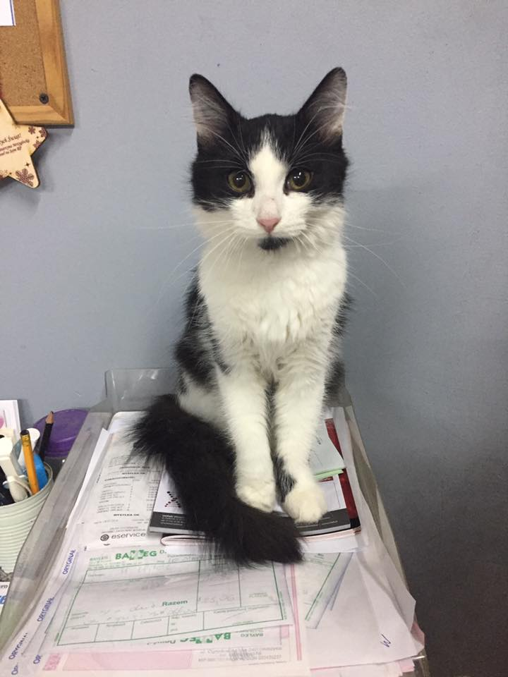

Dowiedz się z naszego bloga

Ubranka dla zwierząt
Wybierając się z naszym zwierzakiem na zimowy spacer pamiętajmy by odpowiednio zabezpieczyć naszego przyjaciela przed zimowym chłodem. Futro nie zapewnia bowiem ciepła w wystarczającym stopniu.

Adopcja krok po kroku
Chcesz przygarnąć do swego domu przyjaciela? Nie wiesz co Cię czeka? W tym miejscu dowiesz się wszystkiego co niezbędne by adoptować wymarzonego zwierzaka.

Którą karmę wybrać
Każdy z nas bardzo kocha swojego pupila i stara się okazywać tę miłość na wiele sposobów. Jednym z nich jest odpowiednie pożywanie. Ale które jest odpowiednie? Tego dowiecie się z naszego wpisu.